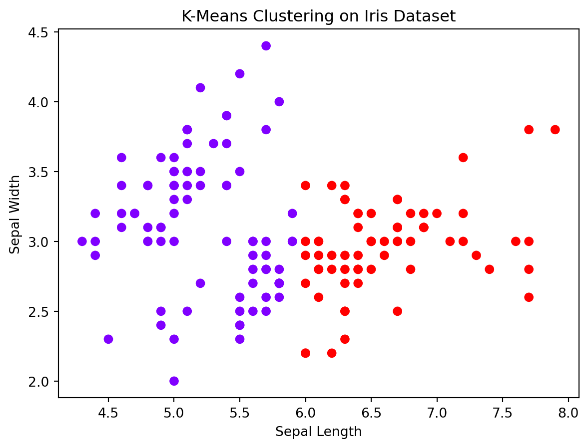

Clustering is a fundamental technique in machine learning, often used in data analysis for pattern recognition and grouping similar data points. In this blog post, we’ll explore the basics of clustering, delve into some common algorithms, and provide Python examples to illustrate these concepts in practice.
What is Clustering?
Clustering is an unsupervised learning technique used to group a set of objects in such a way that objects in the same group (a cluster) are more similar to each other than to those in other groups.
Key Concepts
Cluster: A collection of data points aggregated together because of certain similarities.
Centroid: The central point of a cluster. Not all clustering algorithms use centroids.
Common Clustering Algorithms
K-Means Clustering: Groups data into (k) number of clusters.
Hierarchical Clustering: Builds a hierarchy of clusters using a tree-like structure.
K-Means Clustering
The Mathematical Model
The goal of K-means is to minimize the within-cluster variance, defined as:
where \(C_k\) is the (k)th cluster, \(x_i\) is a data point, and \(\mu_k\) is the centroid of \(C_k\).
Python Example: Implementing K-Means using Iris dataset
from sklearn import datasetsimport matplotlib.pyplot as pltfrom sklearn.cluster import KMeans# Load the iris datasetiris = datasets.load_iris()X_iris = iris.data[:, :2] # We only take the first two features for simplicity# KMeans clusteringkmeans_iris = KMeans(n_clusters=2, random_state=0).fit(X_iris)# Plotting the clustersplt.scatter(X_iris[:, 0], X_iris[:, 1], c=kmeans_iris.labels_, cmap='rainbow')plt.title('K-Means Clustering on Iris Dataset')plt.xlabel('Sepal Length')plt.ylabel('Sepal Width')plt.show()
/Library/Frameworks/Python.framework/Versions/3.11/lib/python3.11/site-packages/sklearn/cluster/_kmeans.py:1416: FutureWarning: The default value of `n_init` will change from 10 to 'auto' in 1.4. Set the value of `n_init` explicitly to suppress the warning
super()._check_params_vs_input(X, default_n_init=10)

The resulting plot shows how K-Means algorithm clusters the iris flowers based on sepal length and width. You can experiment with different numbers of clusters ‘n_clusters’ and features to see how the clustering changes.
Conclusion
Clustering offers a way to uncover hidden patterns in data, making it a crucial tool in the machine learning toolkit. Python, with its rich ecosystem of libraries, provides an accessible platform for exploring these techniques.
Source Code
---title: "Understanding Clustering in Machine Learning"author: "Mohaimin"date: "2023-12-02"format: htmlcategories: [clustering, machine learning]---# IntroductionClustering is a fundamental technique in machine learning, often used in data analysis for pattern recognition and grouping similar data points. In this blog post, we'll explore the basics of clustering, delve into some common algorithms, and provide Python examples to illustrate these concepts in practice.## What is Clustering?Clustering is an unsupervised learning technique used to group a set of objects in such a way that objects in the same group (a cluster) are more similar to each other than to those in other groups.### Key Concepts- **Cluster**: A collection of data points aggregated together because of certain similarities.- **Centroid**: The central point of a cluster. Not all clustering algorithms use centroids.## Common Clustering Algorithms1. **K-Means Clustering**: Groups data into \(k\) number of clusters.2. **Hierarchical Clustering**: Builds a hierarchy of clusters using a tree-like structure.## K-Means Clustering### The Mathematical ModelThe goal of K-means is to minimize the within-cluster variance, defined as:$$ W(C_k) = \sum_{x_i \in C_k} ||x_i - \mu_k||^2 $$where $C_k$ is the \(k\)th cluster, $x_i$ is a data point, and $\mu_k$ is the centroid of $C_k$.### Python Example: Implementing K-Means using Iris dataset```{python}from sklearn import datasetsimport matplotlib.pyplot as pltfrom sklearn.cluster import KMeans# Load the iris datasetiris = datasets.load_iris()X_iris = iris.data[:, :2] # We only take the first two features for simplicity# KMeans clusteringkmeans_iris = KMeans(n_clusters=2, random_state=0).fit(X_iris)# Plotting the clustersplt.scatter(X_iris[:, 0], X_iris[:, 1], c=kmeans_iris.labels_, cmap='rainbow')plt.title('K-Means Clustering on Iris Dataset')plt.xlabel('Sepal Length')plt.ylabel('Sepal Width')plt.show()```The resulting plot shows how K-Means algorithm clusters the iris flowers based on sepal length and width. You can experiment with different numbers of clusters 'n_clusters' and features to see how the clustering changes.## ConclusionClustering offers a way to uncover hidden patterns in data, making it a crucial tool in the machine learning toolkit. Python, with its rich ecosystem of libraries, provides an accessible platform for exploring these techniques.